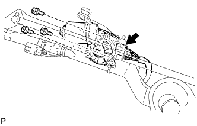
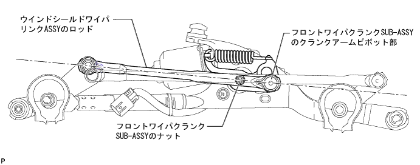
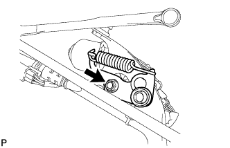
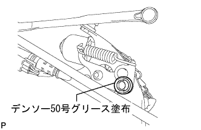
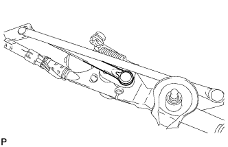

Windshield Wiper Motor Assembly Installation |
| 1. Install Windshield Wiper Motor Assembly |
 |
Install the windshield wiper motor assembly to the front wiper link assembly with the 3 bolts.
Connect the connector.
| 2. Install Front Wiper Crank Sub-assembly |
Connect the windshield wiper motor assembly connector.
Turn the ignition switch (IG) ON.
Operate the wiper switch and stop the windshield wiper motor assembly at the automatic stop position.
Turn the ignition switch (IG) OFF.
Disconnect the windshield wiper motor assembly connector.
Temporarily install the front wiper crank sub-assembly to the windshield wiper motor assembly with the nut.
Temporarily place the rod of the windshield wiper link assembly on the crank arm pivot of the front wiper crank sub-assembly.
As shown in the illustration, align the nut and crank arm pivot of the front wiper crank sub-assembly so that they are in a straight line with the rod of the windshield wiper link assembly shown in the illustration.

 |
Fully tighten the nut.
 |
Apply Denso No. 50 grease to the crank arm pivot of the front wiper crank sub-assembly.
 |
Connect the rod of the windshield wiper link assembly to the crank arm pivot of the front wiper crank sub-assembly.
| 3. Install Windshield Wiper Motor & Link Assembly |
 |
Install the windshield wiper motor & link assembly with the 2 bolts.
Connect the connector.
| 4. Install Cowl Top Ventilator Louver RH |
 |
Engage the 5 claws and install the cowl top ventilator louver RH as shown in the illustration.
| 5. Install Front Side Panel Protector NO.1 RH |
 |
Engage the pin and install the front side panel protector NO.1 RH.
| 6. Install Cowl Top Ventilator Louver LH |
 |
Engage the 11 claws and install the cowl top ventilator louver LH as shown in the illustration.
| 7. Install Front Side Panel Protector NO.1 LH |
 |
Engage the pin and install the front side panel protector NO.1 LH.
| 8. Install Hood to Cowl Top Seal |
 |
Engage the 7 clips and install the hood to cowl top seal.
| 9. Connect Battery Negative Terminal |
| 10. Install Front Wiper Arm & Blade Assembly LH |
 |
Stop the windshield wiper motor assembly at the automatic stop position.
Using a round file or equivalent, clean the wiper arm serrations. (When reassembling)
Using a wire brush, clean the wiper pivot serrations.
 |
Install the front wiper arm & blade assembly LH with the front wiper arm nut so that it is in the position shown in the illustration.
| 11. Install Front Wiper Arm & Blade Assembly RH |
 |
Using a round file or equivalent, clean the wiper arm serrations. (When reassembling)
Using a wire brush, clean the wiper pivot serrations.
 |
Install the front wiper arm & blade assembly RH with the front wiper arm nut so that it is in the position shown in the illustration.
Operate the front wipers while spraying water or washer fluid on the glass, and check the wiping condition of the blades and that they do not interfere with the body.
| 12. Install Front Wiper Arm Head Cap |
 |
Install the 2 front wiper arm head caps.
| 13. Setting Procedure When Disconnecting/Reconnecting Battery Terminal |
)